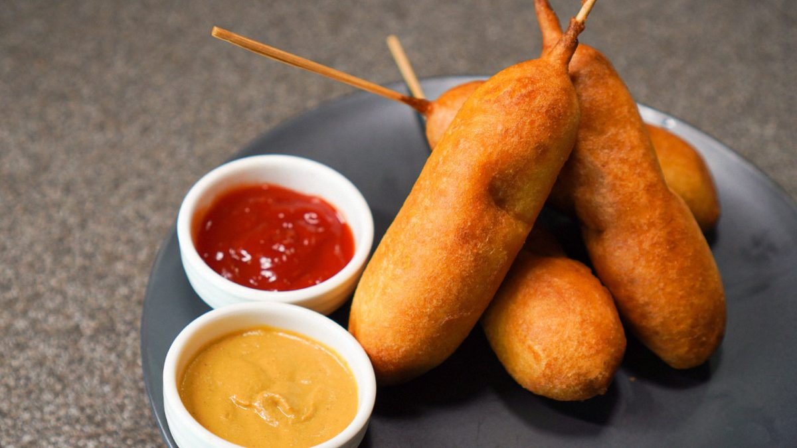

Hot Dog on a Stick
Hot Dog on a Stick

The new way to eat a wiener
I honestly don't like hot dogs that much, they are really
great but it gets boring fast. Who east hot dogs twice
a week? Not me. So eating a hot dog but on a stick, that is
interesting. Basically it is a weiner, or a sausage, covered
in batter, then fried, all while being on a stick. My favourite
weekend snack.
These are popular all around the world, at least in latin America
and Asia. They can get crazy, I mean you can add cheese cubes,
change the sausage for a shrimp, cover the batter in panko, add tiny
cheese cubes on the batter, I tell you they are crazy. And that is
not even talking about the sauce, a whole universe opens. Yes the
classic way is with ketchup and mustard but the options are endless.
Ingredients
- 1 cups of flour
- 2 tsp baking powder
- 1/2 tsp of salt
- 2 Tbsp of suger
- 1 egg
- 3/4 cup of milk
- A lot of oil to fry
- Sticks for hot dogs on a stick
Steps
- Mix all of the ingredients very well. Then let the batter chill for at least
30 min in the fridge.
- Using a deep pan where you can fit your hot dogs, pour enough oil so they
float on it. Heat it at medium heat.
- Stab your sausages with the sticks.
- Pour the chilled batter on a glass, so that you can dump the sausages easily inside
the glass. This will make it very easy to cover them completely.
- Once the oil is hot, pour a tiny drop of the batter. If you see bubbles then is hot
enough. Place the sausages on the oil and wait a few seconds, when one side is golden
turn them. It helps to pour oil on the top with a spoon, it makes it fluff.
- Place them on a paper towel to absorb excess oil.
- Enjoy with your favourite sauce. Keep the sticks, they can be reused.